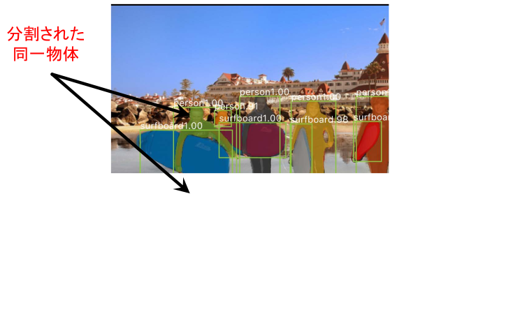
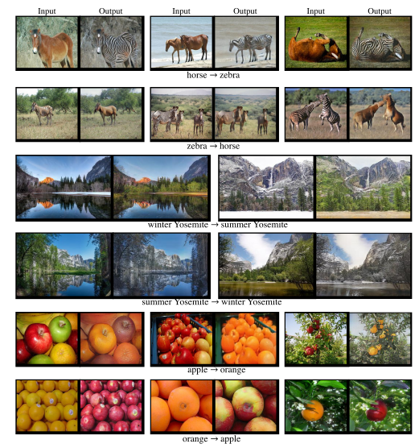

ディープラーニングの心理学的解釈 (心理学特講IIIA)¶
工事中
連絡事項¶
-
今回の資料の PDF ファイル
-
ReLU, tanh に触れていない
- memo: バッチ正則化をやっていない
- 本日の次元圧縮でも，SGD, dropout と同じく
復習を兼ねてもう一度歴史¶
LeNet5 (LeCun, 1998)¶

LeCun (1998) より
AlexNet (Krizensky, et al., 2012)¶

Krzensky et al (2012) より
GooLeNet (Inception) (Szegedy et. al, 2014)¶


空間ピラミッド (2015) より
R-CNN (2015)¶

Girshick (2013) より

Girshick (2013) より
残渣ネット (He et. al, 2015)¶


He (2015) より
Fast R-CNN と Faster R-CNN (2014)¶

Fast R-CNN

Faster R-CNN
セマンティックセグメンテーションとインスタンスセグメンテーション¶
- 完全畳み込みネットワーク(Fully Convolutional Network:FCN) と呼ばれるセマンティックセグメンテー ションを実現するネットワーク
- FCN とは文字通り全ての層が畳込み層であるモデル
 Long (2017) FCN
Long (2017) FCN
- 通常のCNN は，出力層のユニット数が識別すべきカテゴリー数であった。一方 FCN では入力画像の画素数だけ 出力層が必要になる。
- すなわち各画素がそれぞれどのカテゴリーに属するのかを出力する必要があるため出力層には，縦画素数 横画素数 カテゴリー数の出力ニューロンが用意される。
-
図 では，識別すべきカテゴリー数 が 20 であったたま，どのカテゴリーにも属さない，すなわち背景を指示するもう1 つのカテゴリーを加えた計 21 カテゴリーの分類を行うことになる。
-
CNN では畳込演算によって畳込みのカーネル幅(受容野) だけ近傍の入力刺激を加えて計算することになるため， 上位層では下位層に比べて受容野が大きくなることの影響で画像サイズは小さく(あるいは粗く) なってしまう
- このため，最終出力層に入力層と同じ解像度の画素数を得るためには，畳込みと反対方向の解像度を細かくする工夫が必要となる。
- これを解決する一つの方法がアンサンプリング(unsampling) と呼ばれる方法
- 下位のプーリング層の情報を用いて詳細な解像度を得る
- 図 はアンサンプリングにより詳細な画像，すなわち最終的には入力画像と等解像度の出力を得る仕組みを示している。
- 同様の仕組みがセグネット Segnet でも取り入れられている




— You Only Look Once: Unified, Real-Time Object Detection, 2015.
A single neural network predicts bounding boxes and class probabilities directly from full images in one evaluation. Since the whole detection pipeline is a single network, it can be optimized end-to-end directly on detection performance.
画像変換¶

1¶

2¶
3¶

4¶

5¶

6¶

7¶
8¶



まんがの画風変換¶
 ``CartoonGAN: Generative Adversarial Networks for Photo Cartoonization'' CVPR 2018 (Conference on Computer Vision and Pattern Recognition)
``CartoonGAN: Generative Adversarial Networks for Photo Cartoonization'' CVPR 2018 (Conference on Computer Vision and Pattern Recognition)


左: 君の名は。右: 風の谷のナウシカ，より
Realtime Multi-Person 2D Human Pose Estimation using Part Affinity Fields, CVPR 2017 Oral
Paper: https://arxiv.org/pdf/1808.07371.pdf
Web site: https://carolineec.github.io/everybody_dance_now/